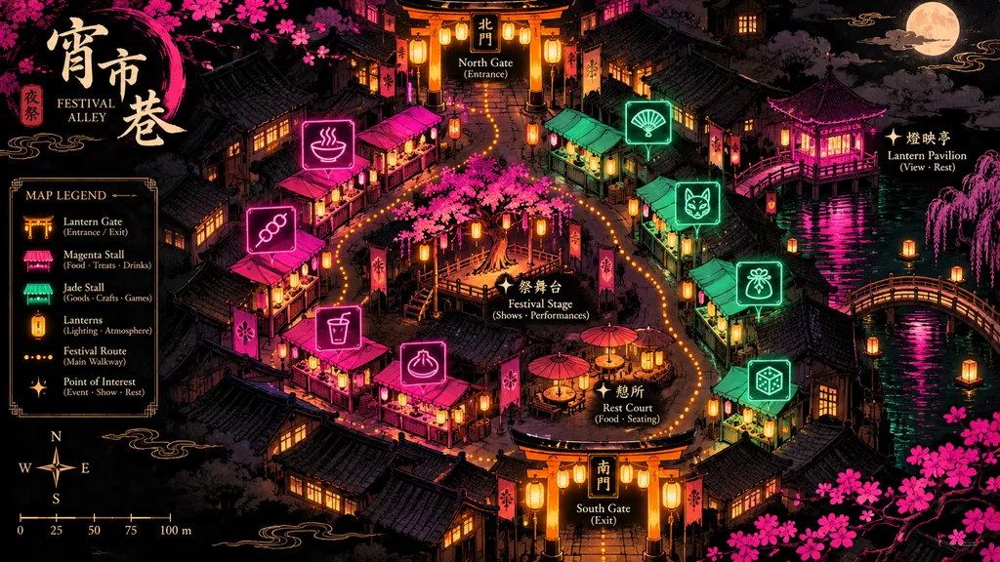

01
Zone 1 — Lantern Row
22 stalls of grilled skewers and smoke, Gate A to the first neon arch.
Vendor Map
The whole festival strip in one glowing map — 84 stalls across four alley zones, three lantern gates, and every jade sign you'll be looking for on a March night.
Open 17:00–01:00, Friday to Sunday

Interactive Alley Map
Tap the alley to explore. Drag to pan, pinch or scroll to zoom. Numbered pins mark every stall — tap a pin for the vendor name, signature dish, and price range.
Pin legend
Zone legend
Four zones, four moods.
Zone Legend
22 stalls of grilled skewers and smoke, Gate A to the first neon arch.
18 stalls of noodles, dumplings and soup, centred on the courtyard tables.
26 stalls of sweets, shaved ice and cocktails under pink neon.
18 charcoal stalls and the big seating deck by Gate C.
Filter the map by what you came for: Tap a craving and the alley dims everything else.
Stall spotlight
Wood-fired pepper pork buns
NT$65
Queue moves fast before 19:00.
Pork and chive dumplings in chilli oil
NT$90
Courtyard seating right beside it.
Mango shaved ice with condensed milk
NT$80
Opens at 18:00 and sells out by 23:00.
Access notes
Step-free entry at Gate A and Gate B, with a ramped route along the full length of Lantern Row and Jade Court. Gate C has a 12cm curb — use the Gate B route instead. Accessible toilets are marked with a jade circle: one beside Jade Court, one at the Riverside Grill seating deck. Wide-lane stalls (1.8m clearance) are highlighted on the map for wheelchair and stroller access. Quiet seating areas sit behind Jade Court and at the riverside deck.
Save stalls to a shortlist and get a walking order from Gate A to Gate C — most visitors hit eight to ten stalls in three hours.
Print the map or keep it on your phone; the alley Wi-Fi is free.